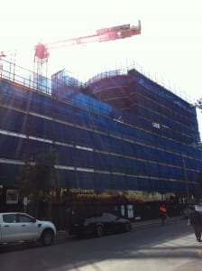

Here are a couple of photos from last year showing the site with the Club in rubble…

the Hakoah Club site seen from Hall Street, July 2011

the Hakoah Club site seen from O'Brien Street, July 2011
And here is a photo of the new building, Boheme, still incomplete, on the Hakoah Club site. I snapped this pic last week.

Boheme, still under construction, where the Hakoah Club stood
Bates Smart, the designers of Boheme, state on their website, that the Hakoah Club was “the social headquarters of Sydney’s Jewish community for 35 years.”
Yes, the club was certainly an important social space for many people in the Eastern Suburbs Jewish community – dare I suggest, particularly for the over 50s. It was a football (soccer) club and a social venue, but I don’t know how many people in Sydney’s Jewish community would agree with the statement that the Hakoah Club was “the social headquarters” of Sydney’s Jewish community.
Like most other ethnic groups, the Sydney Jewish community comprises a diverse group of people who chose to socialise in many different ways. The Hakoah Club was one venue in Sydney were such socialisation occurred.
In any case, I don’t really know what else I can say about this new megalith here, except that it will no doubt change the landscape and culture of the Hall Street I‘ve known for the past 35 years.
The Hakoah Club in Hall Street is now well and truly history.
Let’s see what commercial and real estate wonders Boheme will contribute to the Bondi community. I await in anticipation, and while I do, I am interested in reader’s comments….
]]>